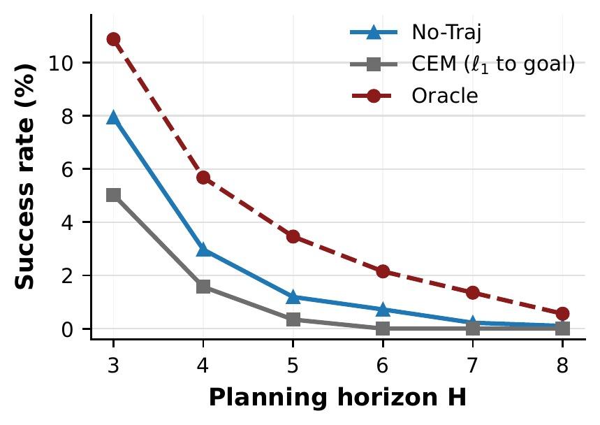
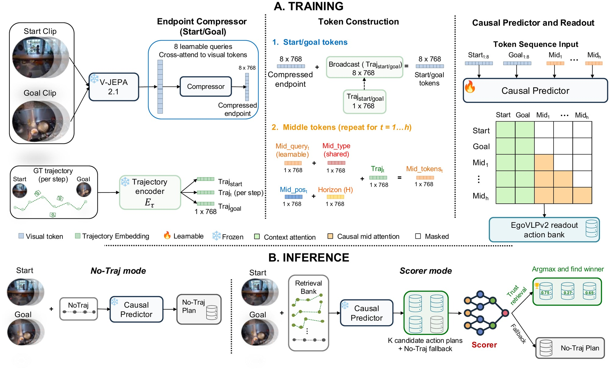
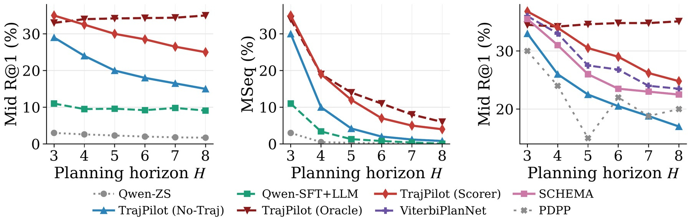
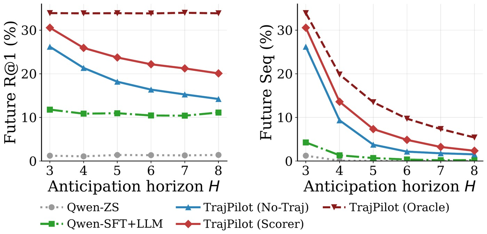
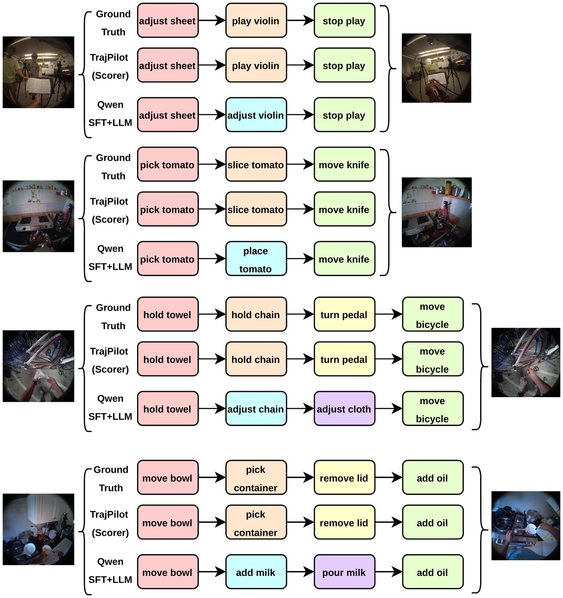

Northeastern University
{jun.se, nguyentruong.h, seminara.l, l.torresani}@northeastern.edu
Do you think the shot will go in?
From a single pre-shot egocentric frame, can you tell?
Predicting how a person's first-person view will evolve (what action will follow, what plan completes a task, whether an in-progress shot will score) is fundamentally under-specified: the same context admits many plausible futures, and a model trained to minimize prediction error is forced to hedge or average across them, getting it wrong either way.
Two findings shape our approach. First, the future camera trajectory, the path the head carves through space, lets the model commit to one of those futures: it carries the operator's intent in a form fine enough to determine how an action will unfold, substantially outperforming language as a conditioning signal. Second, this same intent makes the trajectory itself partially predictable from the context at hand, enough that trajectory need not be observed at test time to recover most of the gain.
We instantiate these findings as TrajPilot, a model that predicts candidate future trajectories from egocentric context and uses them to pilot action prediction in an action-aligned embedding space where language shapes the structure but is never used as a conditioning input. TrajPilot beats VLM and structured-planner baselines on procedural planning across Ego-Exo4D atomic, Ego-Exo4D Keystep, Ego4D GoalStep, and EgoPER, with the trajectory advantage widening with horizon (exactly where prior planners collapse) and holding under RGB-only camera-pose estimation. With the goal masked at inference, the same model performs goal-free anticipation, beating VLM baselines on Ego-Exo4D atomic and extending to EPIC-Kitchens-100 and basketball shot-outcome prediction.
Egocentric observations are ambiguous. Multiple actions and outcomes are consistent with the same visual context.
Future camera trajectory is physically grounded and fine-grained, capturing how the wearer is about to move.
Future trajectory is unobserved at test time, so TrajPilot retrieves candidate trajectories and learns when to trust them.
Language is coarse. The cook can "whisk the eggs" gently or splatter them out of the bowl — the description is shared across success and failure. What separates them is how the body moves.
Camera trajectory is physically grounded and causally tied to outcome. Trained on Ego-Exo4D, a future-latent predictor cuts validation loss 20× more under trajectory than under language:
| Conditioning | Val ℓ1 ↓ | Δ vs none |
|---|---|---|
| none | 0.4773 | — |
| text | 0.4761 | −0.001 |
| trajectory | 0.4572 | −0.020 |
| text + traj | 0.4569 | −0.020 |
| shuffled text | 0.4575 | −0.020 |
| shuffled traj | 0.4964 | +0.019 |
A natural baseline is to search candidate trajectories by ℓ1 distance to the goal latent in V-JEPA space. This actively underperforms ignoring trajectory entirely.
V-JEPA latents are organized by visual continuity, not by what someone is doing. CEM ends up optimizing visual similarity, not action correctness — motivating an action-aligned space.

TrajPilot compresses start and goal clips with frozen V-JEPA 2.1 features, aligns trajectory embeddings with action semantics, and rolls out a causal predictor whose outputs are read against an EgoVLPv2 action bank.

TrajPilot improves planning and anticipation across open- and closed-vocabulary settings on Ego-Exo4D, with the trajectory advantage widening at long horizons.


Predicted action plans versus ground truth on Ego-Exo4D atomic action. TrajPilot recovers the correct steps where the VLM baseline substitutes plausible-looking but wrong actions.

@article{jun2026trajpilot,
title = {How You Move Tells What You'll Do:
Trajectory-Conditioned Egocentric Prediction},
author = {Jun, Sejoon and Nguyen-Truong, Hai and
Seminara, Luigi and Torresani, Lorenzo},
journal = {arXiv preprint},
year = {2026}
}